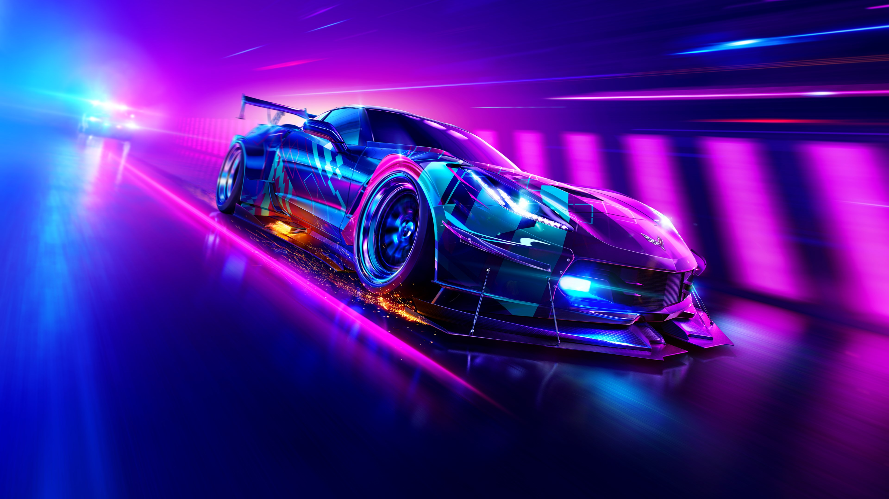

Need for Speed: Heat Review

Let's make this clear at the starting line. Need for Speed: Heat is a decent game, a rich and vibrant open-world racer with an interesting day/night mechanic and thrilling police chases. Imagine the sun-drenched fun of Burnout: Paradise mixed with the vehicular duelling of Need For Speed: Rivals, and you're two thirds of the way to understanding what Need For Speed: Heat is about. All you need to add is the most obnoxious cast of characters ever squeezed out of the sphincter of creation.
I swear by Vin Diesel's right foot, the fighting roster of Mortal Kombat XI is less inherently punch-able than Need for Speed: Heat's pathologically irritating racing drivers. They don't so much talk smack as talk grievous bodily harm, all macho posturing and narcissistic self-absorption. At one point early in the game, Ana, a female racer who is supposedly your best friend says to you "You don't understand. When I'm my car, I got power." They're so vacuously awful that the game's writers have to make the police full-blown cartoon villains so there's no risk you might accidentally start rooting for them.
Given Palm City is basically one giant Miami nightclub, complete with eye-searing neon lights and a seemingly omnipresent thumping bass, perhaps I shouldn't be surprised that its population is so grotesquely in-your-face all the time. Nevertheless, after the positive, upbeat vibes of Forza Horizon, I find Need for Speed's hyperactive, aggressive tone to be tiresome.
Fortunately, beyond its theme Need for Speed: Heat impresses. You assume the role of a rookie street racer looking to make his name on the roads of Palm City. Selecting your character from around a dozen pre-set avatars (every one of whom you would actively avoid at a party), you explore a familiarly structured open-world, competing in races, embarking on drifting challenges, smashing police billboards, and, for some reason, searching for giant fluorescent flamingos.
Heat's open-world has two distinct personalities. By day, all the races you compete in are formal events. Winning a race earns you "bank"—Heat's infuriating slang for cash. This you spend on buying new cars and new components, tailoring each vehicle to suit specific types of events. But Heat truly comes to life at night. Instead of earning you bank, night races increase your "Rep" (please make it stop). This acts as your experience level, unlocking new races and making new cars and vehicle parts available for purchase.
The PC port of Heat is not the best. While the game ran like silk at 4k on my machine, the ability to tinker with graphics options are limited, and there's some weird UI idiosyncrasies like not being able to move the map around with your mouse, and the menu key being set to TAB rather than ESCAPE. Like the rest of the game it works well enough. It's just annoying in places. Nonetheless, if you can stomach Need For Speed: Heat's reprehensible virtual humans, you'll be treated to Ghost Games' best work for a while.